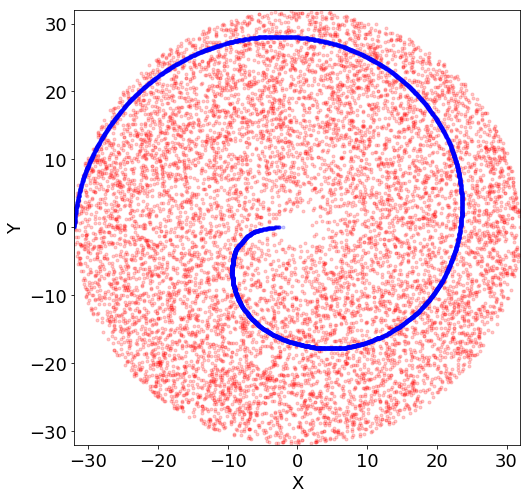
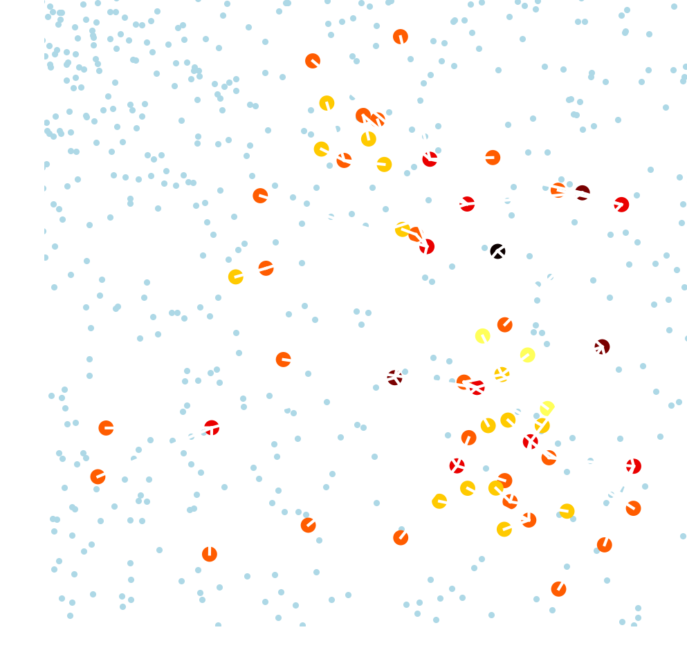
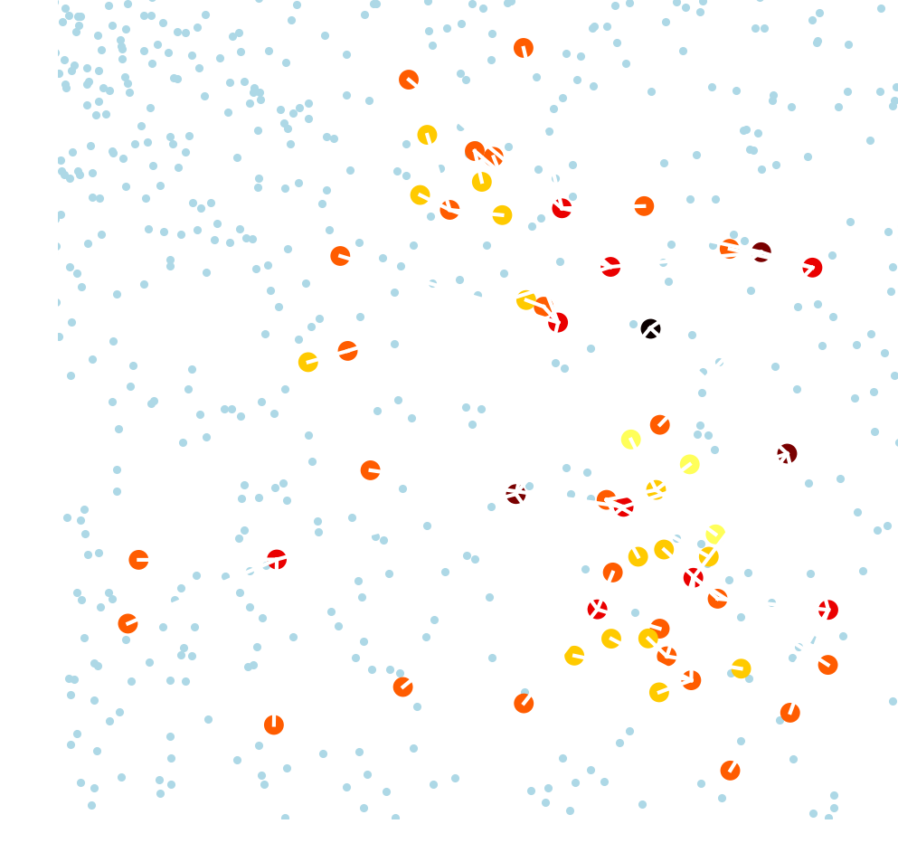

Our Plan to Settle the Galaxy
Do not read the .pdf, enjoy this presentation online!
http://coolrunning.github.io/gtocx_pres
Dario Izzo, Marcus Märtens, Ekin Oztürk, Máté Kisantal, Konstantinos Konstantinidis, Luís F. Sim̃oes, Chit Hong Yam, Javier Hernando-Ayuso
GTOC
Global Trajectory Optimization Competition
- (bi)-annual challenge for aerospace engineers and mathematicians world wide
- Funded 2006 by Dario Izzo (ESA)
- Challenge: solve a nearly impossible problem of interplanetary trajectory design
- More information on the GTOC-portal
10th edition: GTOC-X The Problem
"In about ten thousand years from the present, humanity will reset its counting of years to zero. Year Zero will be the year when humanity decides the time is ripe for the human race to boldly venture into the galaxy and settle other star systems."
GTOC-X Problem Statement released 15th May 2019 by Jet Propulsion Laboratory (JPL)
Problem details
- 100 000 stars spread in a 32 kpa disc
- Slow generational ships: 0.005c
- 90 MYr (=90 Million Years)
- Galaxy dynamics account for rotational curves anomalies
- Merit function rewards evenly spreading through the galaxy
- Exponential growth and spawning of new ships after settlement

The fleet

| Ship | Max Total $\Delta V$ | Max$\Delta V$/impulse | #impulses |
|---|---|---|---|
| Mother Ship | 500 km/s | 200 km/s | 3 |
| Settlement Pod | 300 km/s | 300 km/s | 1 |
| Fast Ship | 1500 km/s | 1500 km/s | 2 |
| Settler Ship | 400 km/s | 175 km/s | 5 |
Objective Function
$$ J = N \eta \sigma = N \underbrace{ \left(\frac{1}{ 1 + 10^{−4} · N(E_r + E_{\theta})}\right)}_{\eta} \underbrace{\left(\frac{\Delta V_\text{max}}{\Delta V_\text{used}}\right)}_{\sigma} $$- $N$: number of settled stars
- $\eta$: settlement spatial distribution efficiency $(<1)$
- $\sigma$: $\Delta V$ efficiency $(>1)$
These terms are strongly interdependent and need to be carefully balanced to achieve top scores!
Settling the whole galaxy?

- Ideal target distributions: $g$
- $g_r$: ideal distance distribution is linear
- $g_\Theta$: ideal angular distribution uniform
- Realized star distributions of solution: $f$
- Abysmal efficiency: $\eta = 7.023 \cdot 10^{-5}$
Optimal spatial distributions
Poisson Disc sampling covers the whole galactic disc uniformly!
Stars at the border of the galaxy are very hard to reach
Optimal spatial distributions
Observation: distributions $r$ and $\Theta$ are independent.
Blue dots and reds dots have the same distributions according to $r$ and $\Theta$
Unperturbed spiral is too narrow (low $N$)
Reaching the stars

Fast Ship capabilities
- Exhaustively compute two-impulse transfer from Sol to any other star
- Filter transfers that take less than 40 Myr (83 915 / 100 000)
- Final star position visualized (90 Myr)
Mother Ship design
The Mother Ships allows for intricate designs
- a) Basic impulsive leg
- b) Two stars - one impulse
- c) One star - two impulses
Two star - one impulse leg
$$ \begin{array}{rl} \mbox{minimize:} & D_{s_2}(T_1, T_2, T_3) \\ \mbox{subject to:} & \Delta V_{mother} \le \min(\Delta V_{left}, 200) \ \text{km/sec}\\ & \Delta V_{\text{pod}_1} \le 300 \ \text{km/sec}\\ & \Delta V_{\text{pod}_2} \le 300 \ \text{km/sec}\\ & x_\text{mother}(T_2) = x_{S_1}(T_2) \\ & x_\text{mother}(T_3) = x_{S_2}(T_3) \\ \end{array} $$- Target star $s_1$ with first impulse at $T_1$ and time of flight $T_2$
- Find a star $s_2$ that comes close to the ship after $T_3$
- Minimize the distance to second target star by adjusting $T_1, T_2$ and $T_3$
Mother Ship Trajectory Atlas
Handpicked trajectories for bootstrapping the tree search
Settlers
How to select stars?
- Cost function efficiency: $\eta$
- Not meaningful for ranking intermediary solutions due to its sensitivity
- Cost function time of flight: $T$
- Triggers exponential growth and clusters in center of galaxy (bad)
- Not economic by spending excessive $\Delta V$
- Cost function cumulative: $\Delta V$
- No pressure to expand fast and thus only few stars settled (bad)
- Oblivious to the target distribution
Solution?
Optimize for $\eta N$ (and take care of $\sigma$ later)!Which stars make good candidates?
- Proximity according Euclidean distance can be suboptimal
- We deploy the orbital indicator to rank transfer potential between stars
- Position and velocities of stars $s_1, s_2$: $(r_1, v_1), (r_2, v_2)$
- Expected time of transfer: $\Delta T$
- Define:
- $x_1 = \left[ \frac{1}{\Delta T} r_1 + v_1, \frac{1}{\Delta T} r_1 \right]$
- $x_2 = \left[ \frac{1}{\Delta T} r_2 + v_2, \frac{1}{\Delta T} r_2 \right]$
- Orbital indicator $d(x_1, x_2) = \Vert x_2 - x_1\Vert_2$
D. Izzo, D. Hennes, L. F. Simoes, and M. Märtens, “Designing complex interplanetary trajectories for the global trajectory optimization competitions” Space Engineering, pp. 151–176, Springer, 2016.
How to grow the trees?
- Trees grown independent from each other might
- overlap in nodes, merging/combining not straightforward
- collectively decrease $\eta$ even if individually grown to increase it!
Solution?
Grow the trees concurrently!
- Denote efficiency of a set of stars $\mathcal{S}$ with $\eta(\mathcal{S})$
- For each potential transfer to a star $s$ compute $\Delta \eta(\mathcal{S}) = \eta(\mathcal{S} \cup \{s\}) - \eta(\mathcal{S})$
- Consider only stars that fulfill: $$\Delta \eta(\mathcal{S}) \geq \frac{-0.01 - \eta(\mathcal{S})}{|\mathcal{S}| + 1}$$
Concurrent Tree Search in action

Settlement Trees in all shapes
 

But what about $\Delta V$?

- All transfers during concurrent tree search have been optimized for time
- Consequently $\sigma \approx 1.18$ (bad)
Solution?
Let us fix our trees in post-processing!
$\Delta V$ Refinements
- Score counts at 90Myr
- we can take our time to reach the leaves!
- A star can spawn up to 3 settler ships
- deploy them all to make shortcuts!
- make new leaf nodes in the process!
Topological restructuring

- Analyse subtrees of depth 2
- One root node, 3 children and 9 grandchildren (at most)
- For a fixed root, there are $\binom{12}{3} = 220$ different trees possible
- Accounting for arrival-constraints, compute all of them and pick the best!
- Recurse from leaves to root of tree
Effect of $\Delta V$ Refinements
Aggressive Refinements
- Reduction
- Find subset of stars to remove from tree with maximum gain in $\eta$
- Regrowth
- Decisions at early phase of tree search often suboptimal
- Sensitivity of $\eta$
- Better decisions possible with knowledge of the final settled regions
- Removing suboptimal branches and kick-starting tree search again
- Padding
- Send ships really slow to very close stars
- Take into settlement tree if gain in $\sigma$ outweights potential loss in $\eta$
Effect of aggressive refinements

raw tree search aggressive refinement
Final solution
Let us put everything so far together!
The Final search
- Grid-search over handpicked fast and mother ship trajectories
- Both fast ships towards edge of galaxy
- $r > 20$kpc, $-1 \leq \Theta \leq 1$
- One mother-ship for center and east part of galaxy
- $r < 10$kpc, $\Theta \approx 3$
- One impulse two stars: deploying 6 settlement pods
- Two mother-ships for south part of galaxy
- $r$ between $10$kpc and $20$kpc, $-3 \leq \Theta \leq -1$
- Two impulse one stars: deploying 2 settlement pods each
- Application of multiple refinement cycles
- Reduction
- Regrowth
- $\Delta V$-Refinement
- Padding
The Solution: Echoes
$N = 2652, \eta = 0.4678, \sigma = 1.6091, J = 1996.111$
Echoes in comparison to optimal Spiral
Spatial Distribution of Echoes
Leaderboard
| Name | Submissions | Last Submission | Best Submission | N, DVused, DVmax | Best Score |
|---|---|---|---|---|---|
| NUDT&XSCC | 54 | June 12, 2019, 3:55 p.m. | June 12, 2019, 3:55 p.m. | 3798, 0.812701E+06, 0.152170E+07 | 3101.14604 |
| Tsinghua LAD - XINGYI | 92 | June 12, 2019, 12:19 p.m. | June 12, 2019, 12:19 p.m. | 2806, 0.624757E+06, 0.112500E+07 | 2070.53723 |
| ESA-ACT | 21 | June 12, 2019, 3:45 p.m. | June 12, 2019, 3:45 p.m. | 2652, 0.660946E+06, 0.106350E+07 | 1996.11072 |
| The Aerospace Corporation | 48 | June 12, 2019, 3:35 p.m. | June 12, 2019, 3:35 p.m. | 2435, 0.769120E+06, 0.976800E+06 | 1559.28104 |
| HIT_BACC | 73 | June 12, 2019, 3:55 p.m. | June 12, 2019, 3:45 p.m. | 2855, 0.714294E+06, 0.114520E+07 | 1167.423 |
Watch it on Youtube!
- 145K views, 439 likes (as of 05.08.2019)
The Galaxy is at peace again!

Questions?
Contact me: Marcus Märtens